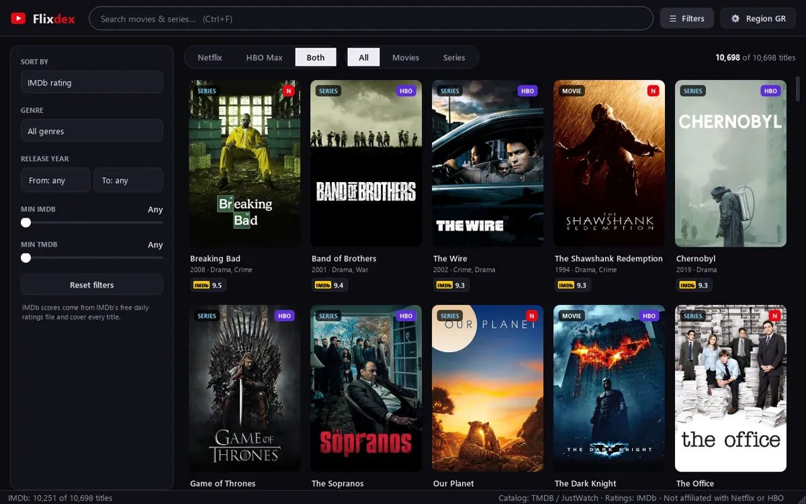
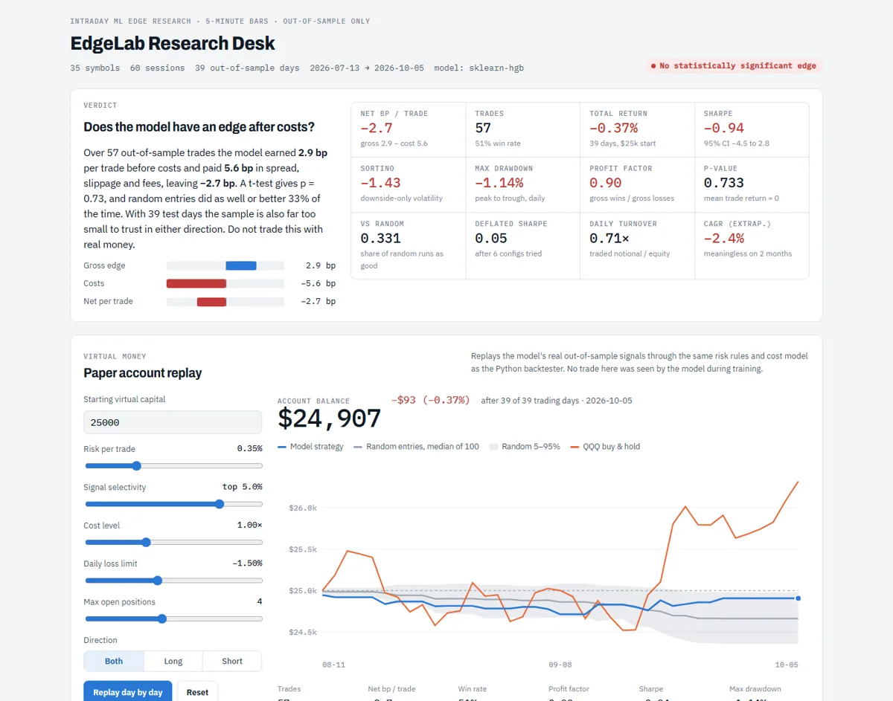
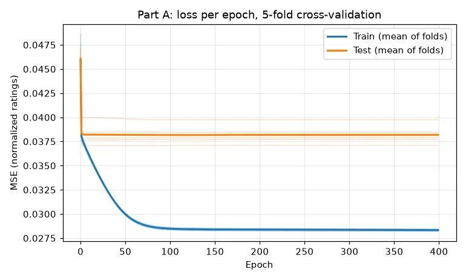

Flixdex
Every Netflix and HBO Max title in your country with its IMDb rating, in one fast Windows app. Search, filter by genre, year and rating, and open any title with one click. Free, and it uses no rate-limited APIs.
@Turnedone · Greece
Software developer at Allianz Greece, working mainly with SQL, PL/SQL and Oracle APEX. On the side I build Python apps and machine-learning research tools. Computer Engineering & Informatics, University of Patras.

Every Netflix and HBO Max title in your country with its IMDb rating, in one fast Windows app. Search, filter by genre, year and rating, and open any title with one click. Free, and it uses no rate-limited APIs.

Does an intraday machine-learning stock strategy have a real edge after costs? A research system built to answer honestly, with walk-forward validation, realistic costs, random baselines and Deflated Sharpe. So far, the answer is no.

Predicting MovieLens movie ratings two ways: a neural network and a genetic algorithm. University coursework from 2020, cleaned up, bug-fixed and tested.